Estructura
Módulo 1 / Aprende a reconocer las etiquetas.
Aprende a reconocer un agave.
Objetivo:
Al terminar, debes poder mirar una imagen y responder:
¿Esto es un agave o no?.
1. ¿Qué es un agave?
Agave y sus características.
¿Qué es un agave?.
Los agaves son plantas que se usan para fabricar tequila.
Forma: Los agaves tiene una forma redonda con muchos picos alrededor.
Color: Su color es azul con verde.
Centro: En el centro del agave hay un pequeño círculo oscuro.
Vista desde arriba:
Las fotografías son tomadas desde arriba y en un escenario ideal así se ven los agaves.
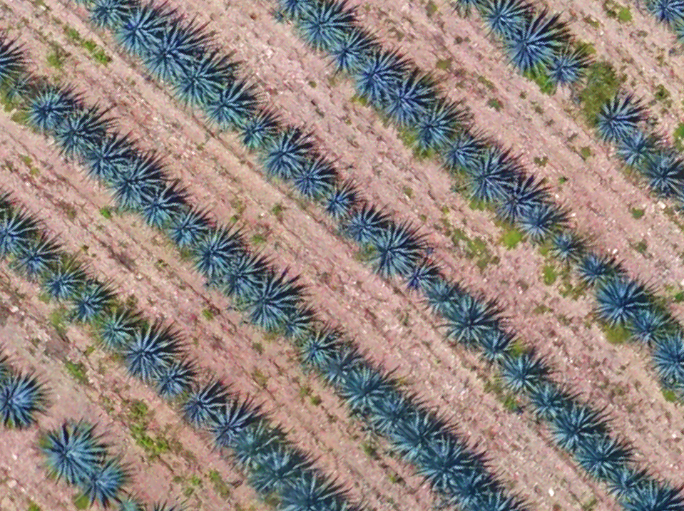
¿Cómo saber si es agave?.
- El color de los agaves es azul-verde.
- Los agaves tiene picos, si ves picos azules es un agave.
- Los agaves suelen generar sombra cuando están vivos.
2. Ejemplos:
Vemos el color azul-verde:
- Vemos picos.
- Vemos sombra.
Por lo tanto ES UN AGAVE.
En este caso la imagen del agave no es tan clara sin embargo cumple con las características de un agave y debe ser anotado como tal.
3. Agaves pequeños:
- Los agaves son muy pequeños debido a que los predios son recién plantados.
- Aunque el color puede no ser claramente visible por su tamaño, deben identificarse principalmente por su forma.
- Suelen presentar un centro oscuro con picos alrededor, dando una apariencia similar a una pequeña estrella oscura.


4. Agaves poco visibles o difíciles de distinguir:
En estos casos la imagen del agave no es tan clara sin embargo cumple con las características de un agave y debe ser anotado como tal.


Así se verán el agave anterior de lejos, TEN CUIDADO, y haz el BB correspondiente a agave.


A pesar de que se ven pequeños, cumple con las características de un agave, podemos ver la forma, los picos y un poco del color de un agave, ten CUIDADO y NO los marques como huecos.
5. Agaves en zonas oscuras:

En sitios oscuros de la imagen, incrementa el brillo para que puedas detectar si es o no un agave, en este caso esos son agaves.
EVALUACIÓN :
Ejercicio 1.

¿Agaves o no agaves?.
Respuesta: Aunque los dos ejemplares se ven un poco más pequeños que el resto, sí son agaves. De acuerdo con el manual, podemos identificarlos porque mantienen dos características importantes: el color y la distancia de plantación.
Ejercicio 2.

¿Agave o no agave?.
Respuesta: En este caso puede parecer un poco más complicado, ya que el agave no conserva el color habitual de la plantación y se ve más opaco. Sin embargo, al revisar la forma de la planta y la distancia de plantación, podemos confirmar que se trata de un agave, posiblemente en proceso de secado.
Recuerda: mientras la planta siga presente y respete la distancia de plantación establecida, se considera un agave.
Ejercicio 3.

¿Agave o no agave?.
Sí. Se trata de un agave, por lo que deberá marcarse utilizando un BBox rojo.
Ejercicio 4.

¿Agave o no agave?.
Respuesta: Sí. Aunque la maleza es alta y cubre gran parte de la hilera, debajo de ella se pueden distinguir tonos verde azulados característicos de los agaves.
Además, los ejemplares respetan la distancia de plantación, por lo que cada uno de los agaves señalados con las flechas deberá marcarse como agave.
Mostrar imágenes y preguntar:
Aprende a reconocer un hueco y NV.
🟨 HUECO
Cuando:
- Estamos dentro de una línea de plantación;
- Podemos ver la tierra;
- Podemos afirmar que ahí no hay agave en un lugar donde si debería de haber.


FALTA EVALUACIÓN
Ejercicio 1.

¿Qué debería marcarse en el lugar señalado y con qué tipo de BBox?.
Respuesta: Hueco.
Aunque se observa un agave pequeño, este no se encuentra sobre la línea de plantación ni respeta la distancia establecida, por lo que se identifica como un hijuelo y esos no los contabilizamos.
En el lugar donde debería encontrarse el agave hay un espacio vacío, por lo que deberá marcarse como hueco con un BBox amarillo.
Ejercicio 2.

¿Qué debería marcarse en el lugar señalado y con qué tipo de BBox?.
Respuesta: Hueco.
De acuerdo con la distancia de plantación, en ese punto debería encontrarse un agave. Como no hay ninguna planta presente, el espacio debe marcarse como hueco con un BBox amarillo.
🟦 NO VISIBLE
Cuando:
- Estamos dentro de una línea de plantación
- Hay maleza con volumen.
- No podemos ver qué hay debajo;
- No podemos afirmar si existe o no un agave.
Las flechas en la siguiente imagen se utilizaron para resaltar los agaves ocultos:

EVALUACIÓN:
Ejercicio 1.

¿Los BBox están correctamente marcados?.
A. Los BBox 1 y 3 deberían marcarse como hueco, mientras que el BBox 2 debería conservarse como NV, ya que la maleza dificulta confirmar qué hay debajo.
B. Los BBox 1 y 2 deberían marcarse como hueco, mientras que el BBox 3 debería conservarse como NV debido a la presencia de maleza.
C. Los BBox 1 y 3 deberían marcarse como hueco, mientras que el BBox 2 debería marcarse como agave, ya que se alcanza a distinguir una sombra debajo de la maleza.
Respuesta correcta: C. Los BBox 1 y 3 deben pasar a hueco, porque la maleza permite comprobar que no hay un agave. En el BBox 2 se distingue una sombra que indica la presencia de un agave, por lo que debe cambiarse a agave.
Ejercicio 2.

¿Este No visible (NV) señalado por la flecha está marcado correctamente?.
A. Sí. La maleza es más alta que los agaves y dificulta determinar si debajo de ella hay un agave o si el espacio está vacío.
B. No. Aunque la maleza es alta, los agaves cercanos permiten determinar que el espacio señalado corresponde a un hueco.
C. No. La presencia de maleza indica que el espacio debe marcarse como agave, aunque no sea posible observarlo directamente.
Respuesta correcta: A. La maleza es lo suficientemente alta como para impedir confirmar si hay un agave debajo. Por ello, debe mantenerse como NV.
Aprende a distinguir HUECO vs. NO VISIBLE.
🟨 HUECO
- Tierra visible;
- Podemos asegurar que no hay agave;
- Poca maleza donde todavía podemos comprobarlo.
🟦 NO VISIBLE
- Maleza con volúmen.
- No podemos ver el suelo.
- No sabemos qué hay debajo.
- No hay señales suficientes para confirmar un agave.
Y especialmente los casos difíciles:
Maleza a ras de suelo.
La cantidad/volumen de maleza y nuestra capacidad de saber qué hay debajo determinan la etiqueta; no el color de la maleza.
EVALUACIÓN:
Ejercicio 1.

Selecciona la opción correcta. Los Bb con la etiqueta de no visible están colocados correctamente?
- Si, porque hay maleza y no se ve si hay agave.
- No, porque la maleza está al ras del suelo.
Opción correcta: No, porque la maleza está al ras del suelo y no hay ningún agave cubierto por la maleza.
Ejercicio 2.

¿Los Bbs señalados con las flechas tienen la etiqueta correcta?.
- Si, porque en esa zonas la maleza se ve mas baja.
- No, porque la maleza no permite ver si hay agave debajo.
- Si, porque la maleza se ve mas seca en esas zonas.

¿El BBox señalado con la flecha está correctamente etiquetado?.
A. Sí. La presencia de maleza en esa zona puede dificultar la visibilidad del terreno y no permite determinar con certeza si debajo hay un agave.
B. No. Aunque hay presencia de maleza, esta no impide observar la zona con suficiente claridad para determinar si existe un agave, por lo que debería clasificarse como hueco
Respuesta: No. Debe marcarse como hueco, ya que la maleza está a ras de suelo y no impide observar el espacio. Además, los agaves vecinos son visibles, lo que confirma que la maleza no es suficiente para ocultar un agave.
Módulo 2 / Distancia.
4.1. Los agaves siguen un patrón de distancia:
Los agaves de una plantación se colocan dejando una distancia determinada entre ellos, que generalmente es igual o muy similar a lo largo de la línea.
Esta distancia existe porque los agaves necesitan espacio para crecer.
Por eso, no debemos interpretar cualquier espacio de tierra entre dos agaves como un hueco.
4.2. La distancia se mide de centro a centro:
Para analizar un espacio vacío, debemos observar la distancia del centro de un agave al centro del siguiente agave visible.

La pregunta no es:
“¿Hay espacio vacío?”
La pregunta correcta es:
“¿Cuántos agaves deberían estar en este espacio de acuerdo con la distancia de plantación?”
4.3. Un espacio vacío no siempre significa que falta un agave:
Imagina dos agaves:
🌱 🌱
Existe un espacio entre ellos, pero ese espacio puede ser completamente normal si corresponde a la distancia que se deja entre plantas.
En ese caso:
No colocamos nada.
El error sería pensar:
“Hay tierra → falta un agave → pongo hueco.”
La distancia normal entre plantas no se considera un faltante.
4.4. Cuando la distancia indica que sí faltan agaves:
Ahora imagina que tenemos:
🌱 ? 🌱 🌱
La distancia entre ambos centros es mucho mayor que la distancia habitual de plantación.
Aquí debemos analizar:
¿Cuántos agaves deberían existir entre estos dos agaves visibles?.
Por ejemplo, si normalmente existe espacio para un agave entre dos plantas, entonces tenemos un agave faltante.
Si el espacio permite que deberían existir dos agaves, entonces tenemos dos agaves faltantes.
La idea fundamental es:
No contamos espacios; contamos agaves faltantes.
EVALUACIÓN:
Determinar si el espacio se debe completar o no hacer dos ejercicios uno donde si otro donde no
4.5. Cómo pensar frente a un espacio vacío:
Cada vez que encontremos un espacio que parezca sospechoso, seguir este razonamiento:
1. Identifico los agaves visibles a ambos lados.
2. Observo la distancia de centro a centro.
3. Comparo esa distancia con la distancia normal de plantación.
4. Determino cuántos agaves deberían existir dentro de ese espacio.
5. Si falta un agave, determino si corresponde a HUECO o NO VISIBLE según lo aprendido anteriormente.
6. Si únicamente corresponde a la separación normal entre plantas, no coloco ninguna anotación.
EVALUACIÓN:
- ¿La sección de la imagen debe completarse? Si es así, ¿cómo la completarías?.
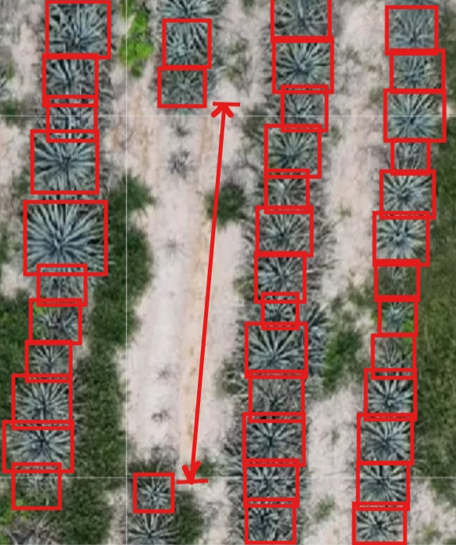
En esta sección se observan algunas plantas pequeñas. Primero debemos marcarlas para tomar en cuenta su ubicación y mantener la distancia de plantación al completar el área.
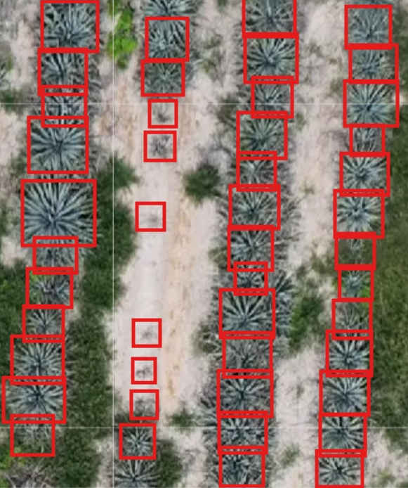
Como la zona no presenta maleza que impida observarla, los espacios restantes deben completarse como huecos.
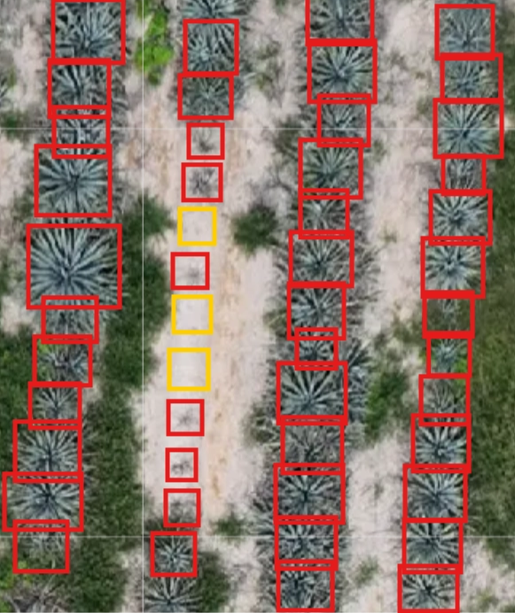
- ¿La sección de la imagen debe completarse? Si es así, ¿Cómo la completarías?.
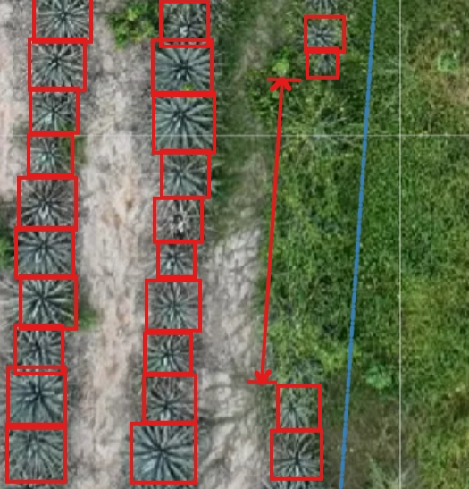
Sí. La sección debe completarse con NV, ya que, aunque la hilera de plantación muestra continuidad, la maleza impide observar qué hay debajo y no permite confirmar si existe un agave o si el espacio está vacío.
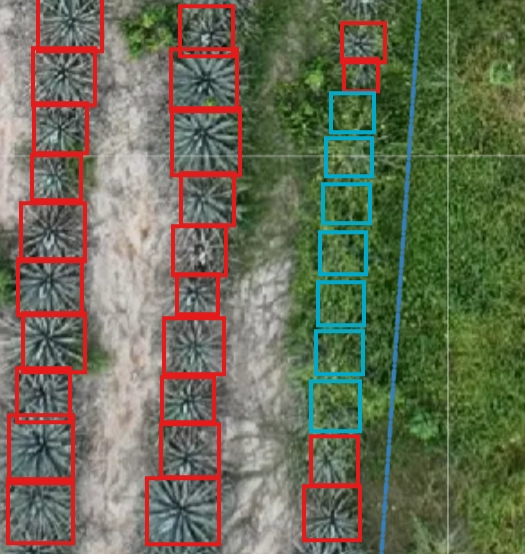
Errores en distancia
1.Llenar todos los espacios
Un error frecuente es colocar una anotación cada vez que se observa una separación entre agaves.
Incorrecto:
“Veo espacio → pongo hueco.”
Correcto:
“Veo espacio → compruebo la distancia → determino cuántos agaves deberían estar ahí → después decido si corresponde hueco/no visible.”
- No llenar los espacios con la cantidad correcta
Un error frecuente es llenar los espacios con anotación extra o con menos anotación
Ejemplos:
- Distancia normal → no se anota nada.
- Distancia equivalente a un faltante → 1 hueco/no visible.
- Distancia equivalente a dos faltantes → 2 huecos/no visibles.
- Espacio irregular → analizar antes de anotar.
- Varios agaves faltantes → determinar cuántos corresponden.
- Comparación de ejemplos correctos e incorrectos.
Evaluación: qué esta mal en la imagen?
- Faltó colocar huecos en algunos espacios
- Se debían colocar no visibles
- Se colocaron muchos huecos de más
Respuesta Correcta: C
- Explicación pedagógica: Recuerda que cada hueco o no visible simboliza que hace falta un agave por lo que debe respetar la cantidad de agave que harían falta, respetando la distancia que tienen entre si los agaves

Evaluación
Evaluación: qué esta mal en la imagen, en relación a los huecos?
- Se pusieron menos huecos de los que hacían falta
- No hay nada mal en la imagen, los huecos están bien
- Se pusieron más huecos de los que hacían falta.
Respuesta Correcta: A
- Explicación pedagógica: Con los huecos debemos de representar la cantidad real de plantas que debería de haber y no hay, siguiendo el mismo patron de distancia que tienen los agaves para colocar los huecos

Módulo 3 / Cómo trabajar correctamente las líneas de plantación.
Árboles
Agaves debajo del árbol
Debajo de los árboles NO SE PLANTAN AGAVES por lo tanto las líneas NO se deben continuar
Ejemplo:
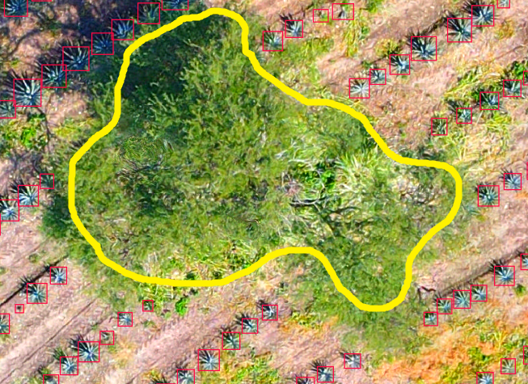
EXCEPCIÓN:
Si identificas agaves debajo del árbol etiquetalo y completa esa línea con no visibles solamente hasta el último agave visible.
EVALUACIÓN:
- Observa la siguiente imagen y responde. ¿Se debe completar el área señalada por la flechas rojas?
- Si, se debe completar la línea
- No, porque hay un árbol y no se ven agaves visibles
- Se completa parcialmente
Respuesta Correcta: C ]
Explicación pedagógica: se completa parcialmente, solamente el área de la última flecha donde si vemos un agave visible]

- Observa la siguiente imagen y responde. El área señalada con una flecha amarilla, ¿está anotada de manera correcta?.
- No, ya que hay un árbol y no se completa.
- Si la línea se debe completar con huecos.
- No, porque deberían ser no visibles.
Respuesta Correcta: [A.
Explicación pedagógica:
No se completa porque cuando vemos un árbol y no tiene agaves debajo la fila se debe dejar hasta el último agave visible.

Piedras.
Agaves bajo piedras
En ocasiones hay piedras dentro de la línea de plantación.
NO se debe continuar la línea cuando las piedras se vean como en la siguiente foto
Solo en caso de que haya un agave visible debajo de la piedra se anota como AGAVE
Ejemplo:
NOTA: La anotación de esta imagen se realiza únicamente con fines ilustrativos. Se utiliza para demostrar que no es necesario completar las líneas cuando hay rocas presentes. Sin embargo muchas de las etiquetas de esta anotación no son adecuadas.
Únicamente si parece que hubo intenciones de continuar la plantación de agaves o cuando las piedras son muy chicas se completa la línea con huecos.
Ejemplo: En esta imagen, podemos ver que casi todo el suelo tiene piedras y, aun así, se plantaron los agaves. Por lo tanto, en este caso, podemos poner huecos donde corresponda.

Hijuelos.
Hijuelo.
Montículos.
Montículos
Los montículos son unas pequeñas montañas de tierra, en muchas ocasiones con piedras y maleza.
En estos casos NO debes completar el área del montículo.
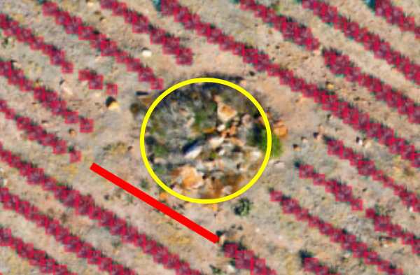
*La línea roja tampoco debe completarse a menos que se vean agaves plantados
Ejemplos de monticulos
Monticulo removido
Monticulos con maleza
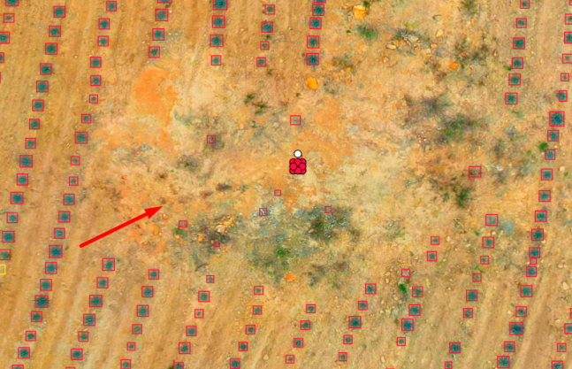
Monticulo seco
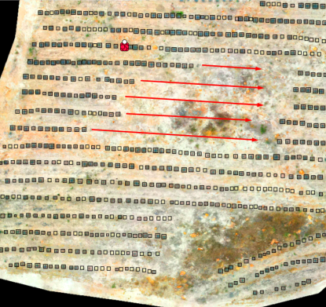
En ninguno de estos casos se debe anotar en el área del montículo.
En los casos donde veas montículos, se deben de dejar las líneas hasta el último agave visible y ya no anotar nada después.
Evaluación
¿Qué se debe hacer en el siguiente caso?.
- Completar toda la línea con huecos porque si se ve la tierra.
- Completar toda la línea con no visibles porque hay maleza en la zona señalada.
- Completar hasta el último agave visible porque la zona señalada es un montículo.
Respuesta: Completar hasta el último agave visible porque la zona señalada es un montículo.

Ejercicio 1. ¿Completarías las hileras en el área señalada en rojo?.

Respuesta: No.
En esta zona se observan dos elementos importantes: la concentración de maleza y el cúmulo de piedras. Estos elementos indican que se trata de un montículo donde no se realizó la plantación.
Por lo tanto, esta zona no debe completarse.
Caídas de agua.
Caídas de agua.
En algunos predios encontrarás canales por donde corre el agua. Estos canales atraviesan la plantación.
No se deben colocar ni huecos ni agaves.
Como puedes ver en algunas ocasiones se hacen surcos, en este caso donde la separación es muy evidente no completaremos las hileras con huecos.

Módulo 4 / Situaciones especiales y tipos de tareas.
Microplantación.
¿Cómo identificar una tarea de microplantación?.
- Cómo reconocerla por el código de la tarea.
- las tareas correspondientes a 26 durante 2026 son las que pueden trabajarse con puntos, y en el siguiente año serían las correspondientes a 27.
- EJ: N26057_13
- Ej siguiente año: N27045_01
- las tareas correspondientes a 26 durante 2026 son las que pueden trabajarse con puntos, y en el siguiente año serían las correspondientes a 27.
1. ¿Qué cambia en una microplantación?.
- Los agaves son muy pequeños porque fueron plantados recientemente.
- Solo se anotan los agaves.
- NO se colocan huecos ni no visibles.
- Se utiliza un punto por cada agave, no BB.
- La herramienta principal para ubicarlos es la distancia de plantación.
Nueva Herramienta.
¡Importante! Esta herramienta está diseñada para hacer tu trabajo más rápido y sencillo, pero por ahora solo se usa en casos específicos:
🔹 Predios de microplantación: Úsala para completar agaves.
🔹 Predios normales: Aquí solo debes usarla para marcar huecos y plantas no visibles. Los agaves en estos predios deben hacerse con Bb NUNCA con puntos
✳️ Recuerda: Si tienes dudas sobre qué predios usar con esta herramienta, ¡pregunta antes de empezar!.
La herramienta funciona en dos pasos
Guardar una referencia de distancia entre agaves
- Presionen K para activar el modo de puntos de referencia.
- Seleccionen algunos agaves en orden (mínimo 5) para que el sistema pueda calcular la distancia de plantación entre ellos.
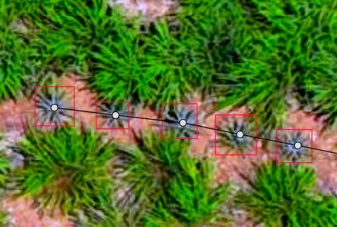
Precaución: Los puntos siempre deben de ir en el centro del agave!
- Una vez seleccionados, presionen K nuevamente. Los puntos cambiarán a color rojo, indicando que la referencia quedó guardada.
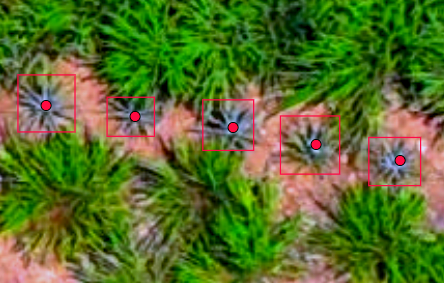
Cuidado: en este caso como los agaves ya tienen BB eliminamos los puntos rojos una vez generada la referencia de distancia que usaremos.
Generar automáticamente los puntos de una hilera
- Presionen J para activar la herramienta.
- Den clic en el primer agave de la hilera y después uno o varios puntos a lo largo de la hilera, seleccionando únicamente agaves.
- Presionen J nuevamente y el sistema colocará automáticamente los puntos de los agaves, respetando la distancia que tomó de la referencia.
Ejemplos:
En algunas microplantaciones, las imágenes pueden aparecer en blanco y negro debido al tipo de imagen (NDVI).
En estos casos, los agaves se identifican como pequeños puntos o círculos blancos. Para reconocerlos, primero identifica las líneas de plantación y después observa el patrón y la distancia regular entre los puntos.

Módulo 5 / Plataforma de trabajo.
Herramientas de cvat.
Bitmap.
- Activar/desactivar bitmap.
- Usarlo para detectar:
- agaves que faltan,
- BB fuera de la línea,
- BB que podrían estar cubriendo más de un agave,
- espacios donde hay que revisar la anotación.
- Bitmap es una herramienta de apoyo, no una regla que sustituye la observación.


.png){kind=link}


Opacidad.
- Aumentar/disminuir la opacidad.
- ¿Para qué sirve?.
- Ver mejor los BB.
- Detectar BB duplicados.
- Detectar BB desfasados.
- Identificar BB demasiado grandes o que están cubriendo algo que no deberían.

- Activar el contorno de los cuadritos.
- Utilizarlo para distinguir mejor los límites de cada BB.
- Especialmente útil cuando hay muchos BB juntos o cuando se superponen.
- Se usa siempre de la mano con la opacidad.
La opacidad nos permite ver bbx duplicados con mayor facilidad.

Ajustes de color.
Para mejorar el color de la imagen puedes seguir los siguientes pasos:
Da click en la flecha que se encuentra abajo de la imagen: Te aparecerá este menú.

Cuando una imagen sea difícil de visualizar, puedes utilizar los ajustes de color para distinguir mejor los agaves.

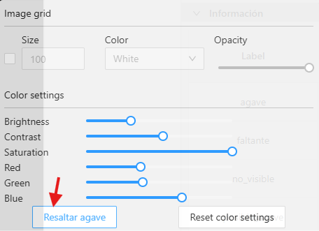
🌵 Resaltar agave
Es un ajuste preestablecido que, en la mayoría de los casos, permite ver los agaves con mayor claridad. Úsalo cuando tengas dificultad para identificarlos.
Si todavía necesitas mejorar la imagen, puedes utilizar los ajustes manuales de brillo, contraste o saturación.
Recuerda: estos ajustes solo ayudan a ver mejor la imagen; no cambian las reglas de anotación.
Ghost Annotation.
Las Ghost Annotations muestran las plantas que ya fueron anotadas en imágenes vecinas de la misma tarea. Sirven para evitar anotaciones duplicadas y como referencia para identificar la continuidad de las líneas de plantación.
Al inicio de cada tarea:
- Activa las Ghost con
Shift + G.
- Mantén las Ghost activadas durante toda la tarea.
- Si una planta ya tiene una Ghost Annotation, no vuelvas a colocarle un BBX.

Eliminar duplicados de toda la tarea: Shift + D
Importante: Mantén siempre las Ghost activadas para poder identificar qué anotaciones ya existen y evitar volver a crearlas.


Módulo 6 / Revisión.
Antes de enviar una tarea a revisión, debes hacer una revisión rápida para comprobar:
- ¿Hay algún agave que no anoté?.
- ¿Puse huecos/no visibles donde realmente no correspondían?.
- ¿La distancia indica que falta algún agave que no marqué?.
- ¿Tengo BB fuera de las líneas de plantación?.
- ¿Hay BB duplicados o demasiado grandes?.
- ¿Hay algún BB que debería eliminar?.
- ¿Las líneas están correctamente completadas?.
Usa la vista general, Bitmap, opacidad y Outline/Border para hacer tu revisión.
Practica:
1. Identifica el error
Imagen ya anotada con un error.

Pregunta:
¿Qué error encuentras en esta imagen?.
Opciones:
- Falta un agave.
- Hay BB de más.
- La anotación es correcta.
- Hay BB fuera de la línea de plantación.
Respuesta correcta hay BB fuera de la línea de plantación.
Explicación: Recuerda que todo lo que se encuentre fuera de las líneas de plantación debe ser eliminado.
2. Decide qué harías.

Observa la distancia entre estos dos agaves. ¿Qué deberías hacer?.
- No colocar nada.
- Colocar un hueco.
- Colocar un no visible.
- Colocar un BB de agave.
Respuesta correcta: Colocar un hueco.
Explicación: el espacio nos indica que si hace falta un bbx y elegimos hueco ya que alcanzamos a ver el suelo.
3.Utiliza mentalmente las herramientas.
Hay dos BB superpuestos y quieres comprobar si realmente corresponden a dos agaves diferentes. ¿Qué herramienta puedes utilizar?.
- Vista normal.
- Con Bitmap.
- Con mayor opacidad y Outline/Border.
Evaluación final.
Evaluación final
Esta evaluación comprobará que puedes identificar correctamente los elementos de una imagen y tomar decisiones de anotación de acuerdo con las reglas aprendidas.
Todas las preguntas son de selección. No necesitas escribir ninguna respuesta.
Para aprobar necesitas obtener mínimo 80/100.
1. ¿Cuál de las siguientes características ayuda a identificar un agave?.
- ⭕ Forma redonda, picos y centro oscuro.
- ⭕ Forma cuadrada y color café.
- ⭕ Forma alargada sin picos.
- ⭕ Cualquier planta que se encuentre dentro de una línea.
Respuesta correcta: Forma redonda, picos y centro oscuro.
2. Observa la siguiente foto y determina ¿Qué debes hacer?.

- ⭕ Marcarlo como hueco porque es demasiado pequeño.
- ⭕ Ignorarlo porque no tiene el color habitual.
- ⭕ Anotarlo como agave.
- ⭕ Marcarlo como no visible.
Respuesta correcta: Anotarlo como agave.
3. No puedes distinguir claramente si hay un agave. ¿Qué puedes hacer primero para observar mejor?.
- ⭕ Marcar directamente un hueco.
- ⭕ Utilizar los ajustes de color para mejorar la visualización.
- ⭕ Eliminar la línea de plantación.
- ⭕ Marcar un no visible sin revisar.
Respuesta correcta: Utilizar los ajustes de color para mejorar la visualización.
4. ¿Qué corresponde?

- ⭕ Agave.
- ⭕ No visible.
- ⭕ Hueco.
- ⭕ No colocar nada.
Respuesta correcta: Hueco.
5. ¿Qué corresponde?

- ⭕ Hueco.
- ⭕ No visible.
- ⭕ Agave.
- ⭕ No colocar nada.
Respuesta correcta: No visible.
6. ¿Qué determina principalmente si una zona con maleza debe marcarse como hueco o no visible?
- ⭕ El color de la maleza.
- ⭕ La cantidad/volumen de maleza y si podemos saber qué hay debajo.
- ⭕ El tamaño de la imagen.
- ⭕ La cantidad de BB que haya alrededor.
Respuesta correcta: La cantidad/volumen de maleza y si podemos saber qué hay debajo.
7. Observa ¿Qué debes hacer?

- ⭕ Colocar un hueco.
- ⭕ Colocar un no visible.
- ⭕ Colocar un agave en medio.
- ⭕ No colocar ninguna anotación.
Respuesta correcta: No colocar ninguna anotación.
8. Encuentras un espacio mucho mayor que la distancia normal de plantación. ¿Qué debes determinar antes de colocar cualquier anotación?
- ⭕ El color del suelo.
- ⭕ Cuántos agaves deberían existir en ese espacio.
- ⭕ Cuántos BB hay en la imagen.
- ⭕ Si la maleza es verde.
Respuesta correcta: Cuántos agaves deberían existir en ese espacio.
9. Si la distancia entre dos agaves indica que debería existir un agave entre ellos, pero no lo encuentras, ¿qué debes hacer?
- ⭕ Colocar un solo hueco o no visible, según lo que puedas observar en esa posición.
- ⭕ Colocar dos huecos.
- ⭕ No colocar nada porque existe espacio.
- ⭕ Colocar un BB de agave automáticamente.
Respuesta correcta: Colocar un solo hueco o no visible, según lo que puedas observar en esa posición.
10. ¿Cuál es la forma correcta de analizar un espacio entre agaves?
- ⭕ “Hay espacio, entonces pongo un hueco.”
- ⭕ “Primero determino la distancia y cuántos agaves faltan; después decido qué etiqueta corresponde.”
- ⭕ “Todo espacio debe tener una anotación.”
- ⭕ “Solo observo el color del suelo.”
Respuesta correcta: “Primero determino la distancia y cuántos agaves faltan; después decido qué etiqueta corresponde.”
11. ¿Debes continuar la línea con BB después del último agave visible?

- ⭕ Sí, siempre.
- ⭕ Sí, porque todas las líneas deben quedar completas.
- ⭕ No, debes terminar la línea en el último agave visible.
- ⭕ Solo si hay maleza.
Respuesta correcta: No, debes terminar la línea en el último agave visible.
12. ¿Cuándo puedes continuar una línea hasta la orilla de la imagen?
- ⭕ Cuando puedes asegurar que la imagen tiene continuación
- ⭕ Siempre que veas suelo.
- ⭕ Siempre que haya espacio vacío.
- ⭕ Nunca.
Respuesta correcta: Cuando puedes asegurar que la imagen tiene continuación
13. ¿Qué debes hacer normalmente con las líneas de plantación debajo de un árbol?
- ⭕ Continuarlas siempre con huecos.
- ⭕ No continuarlas.
- ⭕ Marcar todos los espacios como no visibles.
- ⭕ Colocar un BB en cada espacio.
Respuesta correcta: No continuarlas.
14. Encuentras un agave claramente visible debajo de un árbol. ¿Qué corresponde?

- ⭕ Ignorarlo porque está debajo del árbol.
- ⭕ Marcarlo como hueco.
- ⭕ Anotarlo como agave y continuar la línea con no visibles hasta el último agave visible.
- ⭕ Completar toda la zona con huecos.
Respuesta correcta: Anotarlo como agave y continuar la línea con no visibles hasta el último agave visible.
15. Identificas un pequeño agave fuera de las líneas de plantación, junto a un agave plantado. ¿Qué es probablemente?

- ⭕ Un hueco, se debe marcar.
- ⭕ Un no visible, no se debe marcar
- ⭕ Un hijuelo, no debe llevar BB
- ⭕ Un agave que debe llevar BB.
Respuesta correcta: Un hijuelo, no debe llevar BB
16. ¿Cómo deben marcarse los hijuelos que están fuera de las líneas de plantación?
- ⭕ Con un BB.
- ⭕ Con un punto.
- ⭕ Con un no visible.
- ⭕ No se deben marcar.
Respuesta correcta: No se deben marcar.
17. En una tarea de microplantación, ¿qué elementos se anotan?
- ⭕ Agaves, huecos y no visibles.
- ⭕ Solo huecos.
- ⭕ Solo agaves.
- ⭕ Solo no visibles.
Respuesta correcta: Solo agaves.
18. ¿Cómo se anotan los agaves en una microplantación?
- ⭕ Con BB.
- ⭕ Con un punto por cada agave.
- ⭕ Con huecos.
- ⭕ Con no visibles.
Respuesta correcta: Con un punto por cada agave.
19. Antes de enviar una tarea a revisión, ¿cuál de estas acciones forma parte de una revisión correcta?
- ⭕ Revisar si faltan agaves, si hay anotaciones incorrectas y si las líneas están correctamente completadas.
- ⭕ Revisar únicamente que haya suficientes BB.
- ⭕ Revisar únicamente la cantidad de hectáreas.
- ⭕ No revisar la tarea porque ya fue anotada.
Respuesta correcta: Revisar si faltan agaves, si hay anotaciones incorrectas y si las líneas están correctamente completadas.
20. Tienes varios BB juntos o superpuestos y quieres distinguir claramente los límites de cada uno. ¿Qué herramienta puedes utilizar?
- ⭕ Opacidad y Outline Border.
- ⭕ Distancia de plantación.
- ⭕ Hueco.
- ⭕ No visible.
Respuesta correcta: Outline / Border.
Módulo extra / Autoguardado y anotación automática (este módulo no se evalúa y va después de la evaluación final)
Autoguardado.
Activa tu autoguardado
Este paso solo tendrás que realizarlo una vez, pero es obligatorio activarlo antes de comenzar a trabajar.
El autoguardado permite guardar tu progreso y nos ayuda a identificar cuándo estás trabajando activamente en una tarea. Si no lo activas, tu tarea puede aparecer como inactiva y podría ser reasignada.
Además, el autoguardado ayuda a reducir la pérdida de trabajo en caso de problemas con tu conexión a internet o con la electricidad.
¿Cómo activarlo?.
- Haz clic en el ícono de usuario, donde aparece tu ID de usuario.

- Entra en Settings / Configuración.

- Entra en Workspace.
- Busca la opción Enable Auto Save y actívala.
- Configura el autoguardado en 5 minutos.

- Baja hasta el final de la página y haz clic en Save para guardar toda la configuración que acabas de realizar.

Guardar la imagen antes de enviar tu tarea a revisión.
Para guardar tu progreso da click en el ícono de save.

Da click en Menú
Da click en Enviar a revisión / review.

Anotación automática.
Anotación automática:
- Este proceso solo se realiza UNA VEZ por cada tarea.
Sigue los siguientes pasos:
Para saber si una tarea ya tiene anotación automática sin necesidad de abrirla, sigan esta regla:
"New" → La tarea no tiene anotación automática, deberán correr la anotación automática.

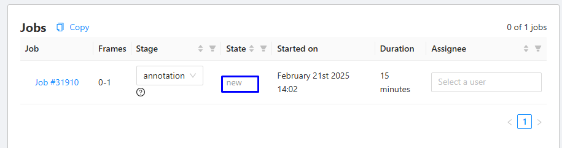
"In Progress" → La tarea ya tiene anotación automática o alguien más ha trabajado en ella. NO debes correr la anotación automática!!

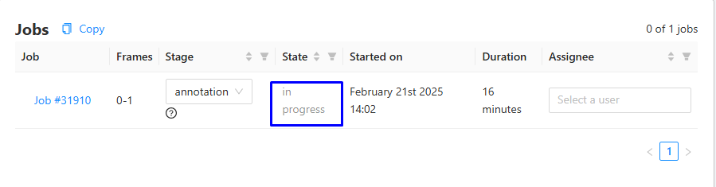
Este detalle les ayudará a identificar rápidamente el estado de cada tarea y organizar mejor su flujo de trabajo.
Cómo correr la anotación automática
Haz click en los 3 puntos del lado derecho.


Haz click en AUTOMATIC ANNOTATION.
Da click en ctd_v5_ltr


Da click en Annotate
Espera a que la línea se complete.


Una vez que se terminé te aparecerá este mensaje.
IMPORTANTE: Si abres la carpeta y la imagen ya tiene bounding boxes NO debes hacer anotación automática, solo continua el trabajo.